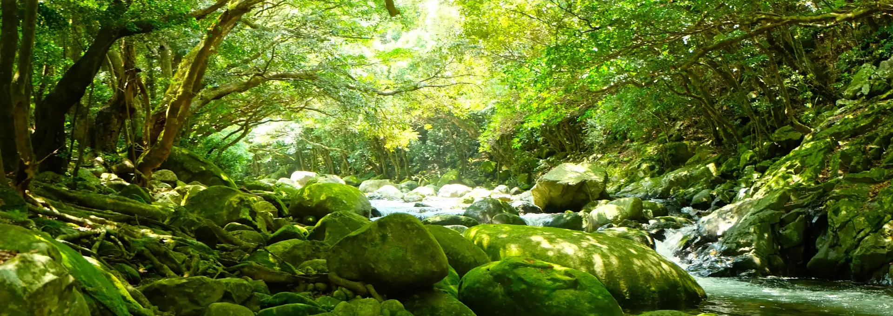
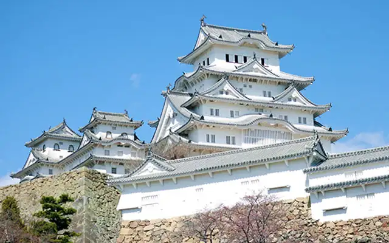
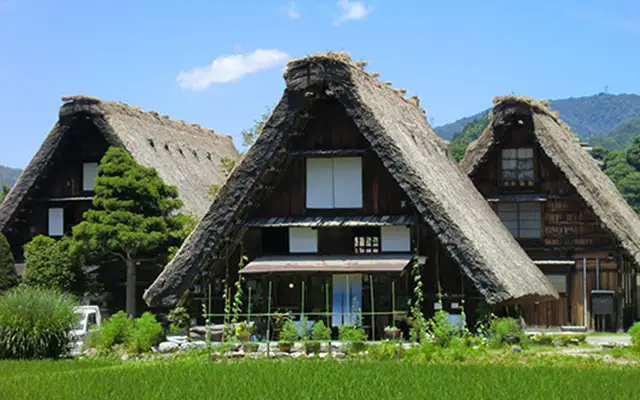

世界遺産とは

世界遺産とは、ユネスコにより保護される文化的・自然的に重要な場所です。 人類共通の財産として、将来の世代にも伝えていくことが目的とされています。 日本には、文化遺産・自然遺産あわせて20件以上が登録されており、それぞれが歴史や自然の豊かさを物語っています。
登録遺産

姫路城
兵庫県姫路市にある国宝・世界遺産の城。白漆喰の美しい外観から「白鷺城」とも呼ばれ、江戸時代初期の姿を今に伝える。天守や櫓など約100棟が現存し、日本屈指の名城として親しまれている。
UNESCOのページへ
白川郷の合掌造り集落
岐阜県白川郷と富山県五箇山にある世界遺産。急傾斜の茅葺き屋根が特徴の合掌造り家屋が集落全体で保存されており、日本の伝統的な山村景観を今に伝える。
UNESCOのページへ厳島神社
広島県廿日市市の宮島に鎮座する世界遺産の神社。海に浮かぶ大鳥居が象徴的で、潮の満ち引きで異なる表情を見せる。平清盛ゆかりの歴史ある神社としても知られる。
UNESCOのページへ世界遺産登録数の比較
日本と他の国々の世界遺産登録数を比べてみると、文化の多様性や自然の豊かさが数字にも表れています。 登録数が多い国ほど、古代からの文明や広大な自然を有している傾向があります。 こうした表から、世界各国が大切にしている価値観の違いを読み取ることもできますね。
| 国名 | 文化遺産 | 自然遺産 | 複合遺産 | 合計 |
|---|---|---|---|---|
| 日本 | 20 | 5 | 0 | 25 |
| イタリア | 53 | 5 | 1 | 59 |
| 中国 | 39 | 14 | 4 | 57 |
| ドイツ | 42 | 3 | 0 | 45 |